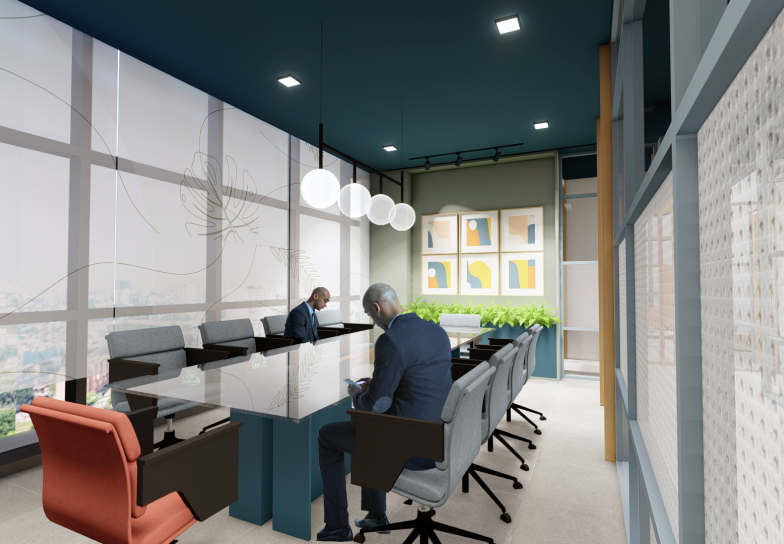

what courses we offer ?
000
Doctors at work
000
satisfied patients
000
Bed facility
000
available hospitals
Clinical Services

Our clinical services are designed to cater to your unique
healthcare needs with professionalism, expertise, and
dedication.
why choose MERF-ISH ?
One of the Leading Centers in the world for “Hearing
Restoration”
Biggest and most advanced hearing implant center in the
world
Extensive Out Reach Programme to serve the people in nook &
corner of the state
Only Institute in India to be a member of HEARING Network
Facilities and activities to network with International
Experts
Experienced and Competent Faculty, who are passionate in
Teaching
Testimonials

“Come into the field if you have as strong Inner motivation
to make a Difference”
“Come into the field if you have as strong Inner motivation
to make a Difference”